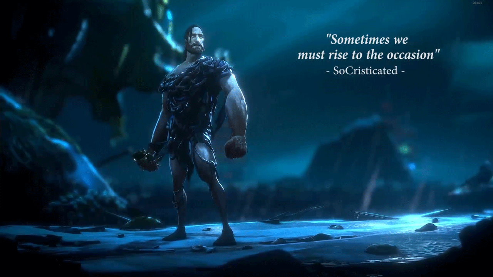
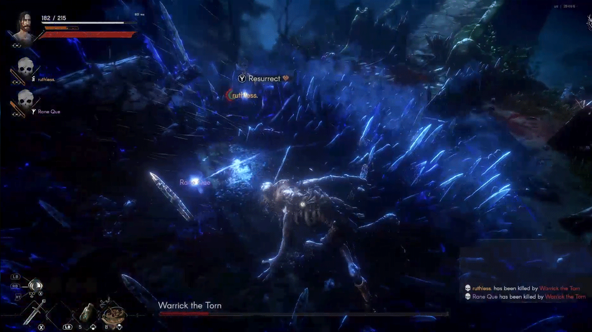
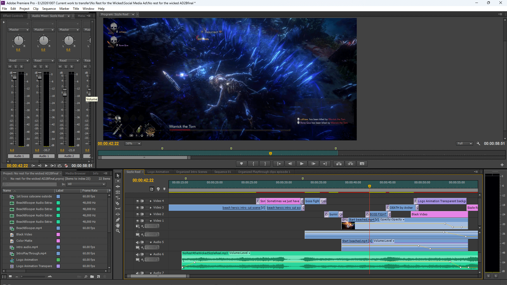
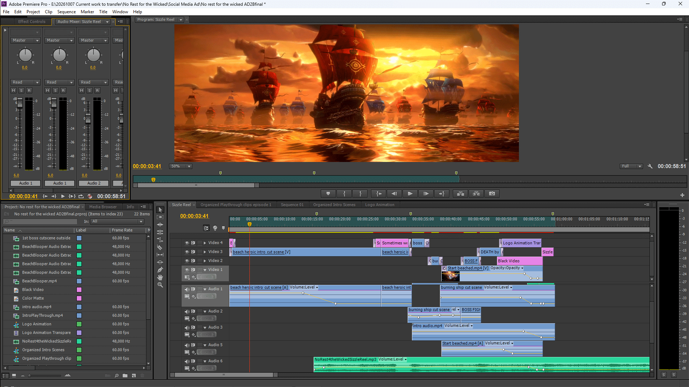
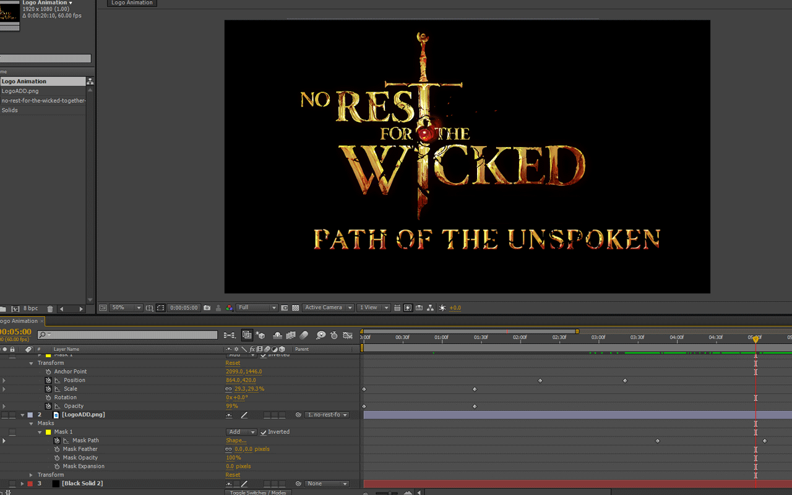
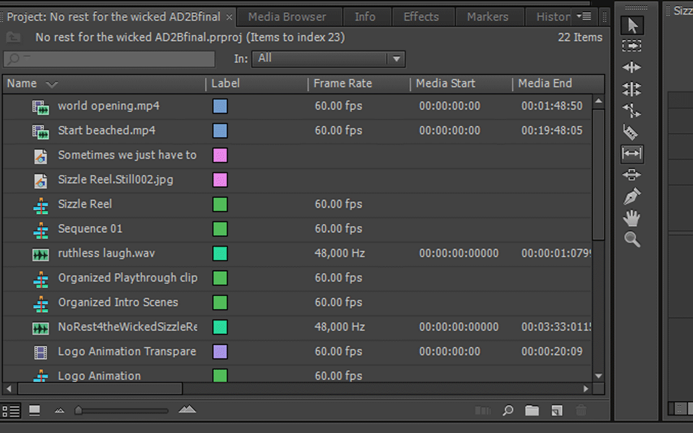
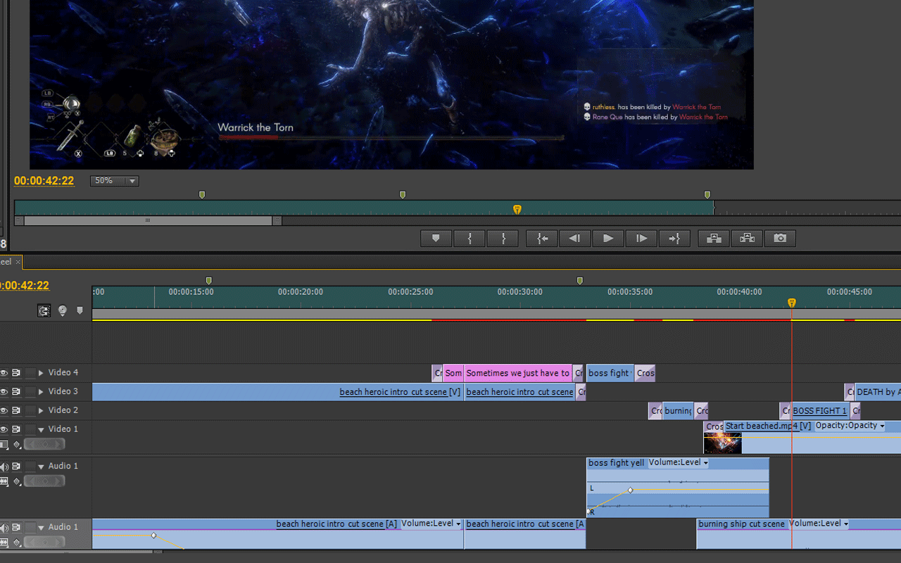

FEATURED PROJECT / POST-PRODUCTION
Video Editing & Storytelling.
Editing focused on pacing, visual storytelling, sound and polished final delivery.
FINAL EDIT
Featured Edit
Watch the completed project first, then explore the creative decisions behind the edit below.
Video editing, pacing, and audio balancing by Christopher Batas.
Music: AI-generated with Suno under my creative direction.
Gameplay footage from No Rest for the Wicked. Game content belongs to its respective owners.
PROJECT OVERVIEW
The Project
A cinematic editing showcase featuring storytelling, music-driven pacing, and audio layering using gameplay footage from No Rest for the Wicked.
Project Overview
No Rest for the Wicked is a personal cinematic editing project created using in-game footage. The goal was to transform selected cinematic and gameplay moments into a cohesive, music-driven showcase.
The opening establishes the atmosphere through edited cinematic footage. At approximately 14 seconds, the music-driven portion begins, with cuts and transitions deliberately synchronized to the soundtrack's beats and changes in intensity.
Selected in-game sound effects were retained and adjusted using audio gain to blend naturally beneath the music, preserving atmosphere without overpowering the soundtrack.
The finished 59-second reel demonstrates cinematic storytelling, rhythmic editing, shot selection, and audio balance.
EDITING FOCUS
Building the Story
The project was shaped around several core areas of post-production.
Cinematic Storytelling
I structured the opening around edited in-game cinematic footage to establish atmosphere before transitioning into a faster, music-driven sequence. Shot selection helped create a clear progression from the introduction to the final moments.
View Example ↓Music-Driven Editing & Pacing
Beginning at approximately 14 seconds, I synchronized cuts and transitions to the soundtrack's beats and changes in intensity. This created momentum while preserving the cinematic flow of the reel.
View Example ↓Audio Layering & Balance
I retained selected in-game sound effects and adjusted their audio gain to blend beneath the Suno-generated soundtrack. This preserved atmosphere without overpowering the music.
View Example ↓Motion Graphics & Final Polish
I created an animated ending title in Adobe After Effects using keyframes, masks, and transform adjustments to complete the cinematic presentation.
View Example ↓SELECTED EDITING BREAKDOWN
From Gameplay to Final Edit
A closer look at selected moments from the project and how story, pacing, sound and visual finishing were used to shape the final sequence.
Building a Clear Sequence
Selected cinematic and gameplay moments were arranged to establish atmosphere, introduce the character, and build toward a dramatic confrontation.

01 / Setup
Establishing the world and atmosphere through a cinematic opening that introduces the scale and tone of the story.

02 / Development
Shifting focus toward the character and introducing a personal storytelling moment before the action intensifies.

03 / Payoff
Building toward a high-intensity confrontation that provides dramatic visual contrast to the opening cinematic.
Editing Focus: Selecting and arranging gameplay moments so the viewer can follow the sequence while maintaining narrative momentum.
Music-Driven Editing & Pacing
Beginning at approximately 14 seconds, the edit transitions into a music-driven sequence. Cinematic and gameplay footage were arranged around the Suno-generated soundtrack, with cuts and transitions synchronized to musical beats and changes in intensity.

Editing Focus: Creating rhythm and momentum through shot selection, transition timing, and synchronization with the soundtrack in Adobe Premiere Pro.
Audio Layering & Volume Automation
Selected gameplay sound effects were layered beneath the Suno-generated soundtrack. Volume keyframes and gain adjustments helped preserve the atmosphere of the original footage while supporting the music-driven pacing.

Editing Focus: Balancing soundtrack levels with gameplay audio using volume adjustments and keyframing in Adobe Premiere Pro.
Animating the Ending Title
The ending title, "Path of the Unspoken," was animated in Adobe After Effects. Keyframes, masks, and transform adjustments were used to develop the title reveal and complete the cinematic presentation.

Finishing Focus: Creating a custom animated title sequence that provides a deliberate ending to the 59-second cinematic reel.
CREATIVE PROCESS
Editing Approach
A high-level look at the editing workflow without revealing project files, detailed settings or proprietary techniques.
Review
Reviewing and organizing the available material before beginning the edit.
Story Build
Identifying the strongest material and establishing the overall structure of the piece.
Refinement
Developing pacing, sound and visual continuity as the edit takes shape.
Delivery
Final review and preparation of the completed edit for its intended presentation.
BEHIND THE EDIT
Selected Process
A few selected views from the editing process that provide context without exposing detailed project settings or source files.

A selected view representing how footage was prepared and organized for editing.

Layering cinematic and gameplay footage across multiple video tracks, with transitions and audio adjustments supporting the sequence's pacing.
Creating the ending title animation in Adobe After Effects using keyframes, masks, and transform adjustments to complete the cinematic presentation.
FINAL RESULT
From Raw Footage to Final Story.
The finished edit brings story, pacing, sound and visual elements together into a cohesive final piece.